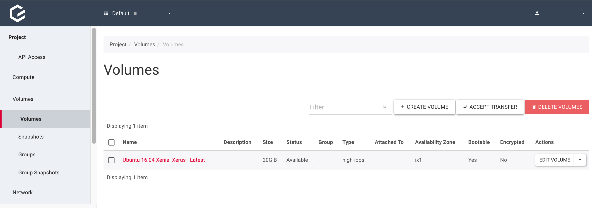
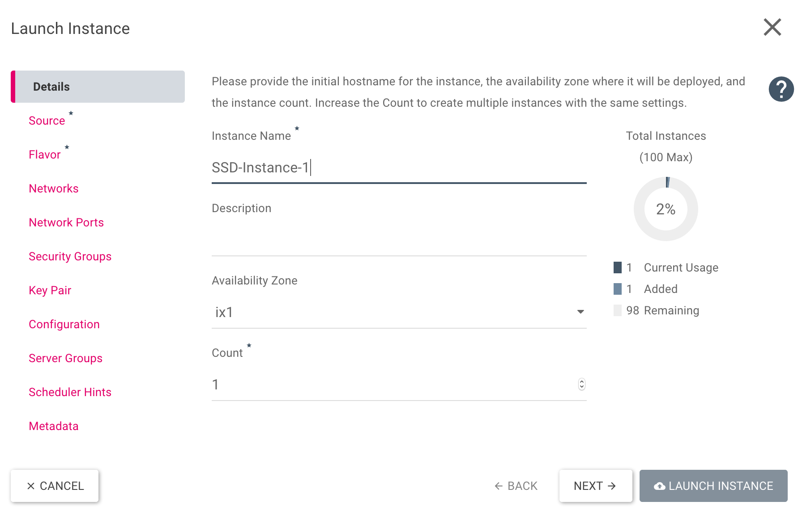
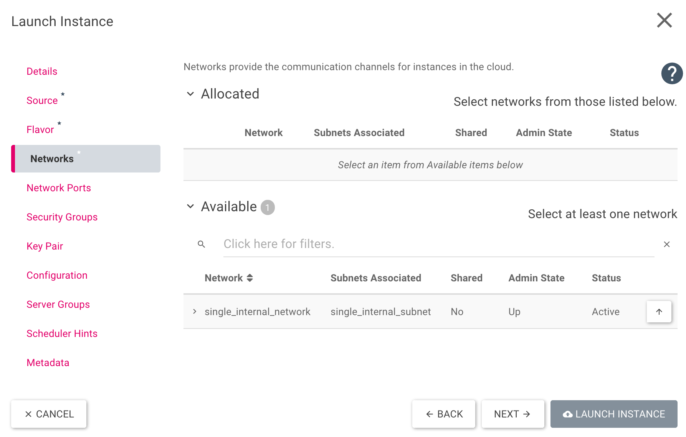

Schritt 21: Eine Instanz von einem SSD-Volume starten
Vorwort
In den vorigen Schritten haben wir uns bereits eine eigene Instanz erstellt und auch die ersten Grundlagen in HEAT sind gelegt. Wir werden in diesem Schritt eine Instanz von einem Volume starten und dafür den SSD-Speicher nutzen. Auch hier gibt es mehrere Wege unser Ziel zu erreichen, daher werden wir in diesem Schritt sowohl das Horizon(Dashboard) nutzen, als auch unser HEAT Template aus Schritt 18 weiter modifizieren.
Der Weg über das Horizon(Dashboard)
Um zu starten, loggen wir uns zunächst wie in “Schritt 1: Das Dashboard (Horizon)” erklärt ins Horizon(Dashboard) ein. Hier wechseln wir links in der Seitenleiste auf Project → Volumes → Volumes und klicken dann rechts auf “+ Create Volume”

In dem sich öffnenden Fenster geben wir folgende Optionen an und klicken dann auf “Create Volume”:
- Volume Name: Hier wird der Name des Volumes vergeben, dieser kann frei gewählt werden. Im Beispiel wird nach der Auswahl des Images automatisch “Ubuntu 16.04 Xenial Xerus - Latest” eingetragen.
- Description: In diesem Feld kann eine Beschreibung hinzugefügt werden, je nach Bedarf. Im Beispiel wird keine Beschreibung verwendet.
- Volume Source: Hier kann zwischen “Image” und “No source, empty image” gewählt werden. Für unser Beispiel nutzen wir “Image”.
- Use image as a source: Es kann ein beliebiges Image genutzt werden. Im Beispiel wird “Ubuntu 16.04 Xenial Xerus - Latest (276.2 MB)” verwendet.
- Type: Hier besteht die Wahl zwischen “high-iops”, “low-iops” und “default”. Da wir SSD-Speicher nutzen wollen, wählen wir “high-iops” aus.
- Size: In diesem Feld bestimmen wir die Größe des Volumes, bei unseren Flavors sind es 20 GiB, daher nutzen wir dies auch für unser Beispiel
- Availability Zone: Hier kann man zwischen 3 Optionen “Any Availability Zone”, “es1” oder “ix1” wählen und die entsprechende Zone festlegen. Im Beispiel nutzen wir ix1.

Nachdem das Horizon das Volume korrekt erstellt hat, sollte es in etwa so aussehen:

Um eine neue Instanz von diesem Volume zu starten, können wir entweder rechts auf den Pfeil nach unten, neben “Edit Volume”, klicken und dann auf “Launch as Instance” oder alternativ dazu kann man auch links in der Seitenleiste auf Compute → Instances wechseln und dort auf “Launch Instane” klicken.
Im sich öffnenden Fenster geben wir der Instanz einen Namen (Instance Name), wählen dieselbe Availability Zone wie weiter oben, also ix1 und wechseln dann links auf Source.

Unter Source wählen wir Volume als Select Boot Source aus und klicken dann neben unserem erstellten Volume auf den Pfeil nach oben.

Nun klicken wir links auf Flavor und wählen einen der möglichen Flavors aus, indem wir auf den Pfeil nach oben neben dem gewünschten Flavor klicken.

Im nächsten Schritt wählen wir links, über den Reiter Networks das Netzwerk für die VM aus. Auch hier klicken wir neben dem gewünschten Netzwerk auf den Pfeil nach oben.

Damit sind alle wichtigen Einstellungen getroffen und die Instanz kann mit “Launch Instance” gestartet werden. Falls benötigt, können noch eigene Security Groups und/oder Key Pairs der Instanz hinzugefügt werden.
Der Weg über HEAT
Wie bereits im Vorwort erwähnt, nutzen wir unser HEAT Template aus Schritt 18. Dieses Template startet bereits eine Instanz. Damit diese nun aber ein SSD-Volume nutzt, bedarf es einiger Änderungen. Zunächst fügen wir unseren Parametern noch die “availability_zone” hinzu:
heat_template_version: 2014-10-16
parameters:
key_name:
type: string
public_network_id:
type: string
default: provider
availability_zone:
type: string
default: ix1
Der nächste Schritt ist am Ende des Templates einen eigenen Punkt “boot_ssd” für das Volume hinzuzufügen:
boot_ssd:
type: OS::Cinder::Volume
properties:
name: boot_ssd
size: 20
availability_zone: { get_param: availability_zone }
volume_type: high-iops
image: "Ubuntu 16.04 Xenial Xerus - Latest"
Nun haben wir bereits einen Parameter hinzugefügt und nutzten diesen auch direkt in unserem neu erstellten Boot-Volume. Damit die Instanz auch vom Volume startet, überarbeiten wir den Punkt “Instanz” in unserem HEAT-Template . Dort können wir den Punkt “image” entfernen (im Beispiel ist er per # auskommentiert), da dieser ja über das Volume bereitgestellt wird. Wir fügen nun noch die “availability_zone”, einen Namen “name”, das Netzwerk “networks” und das Volume “block_device_mapping” hinzu:
Instanz:
type: OS::Nova::Server
properties:
name: SSD-Test
availability_zone: { get_param: availability_zone }
key_name: { get_param: key_name }
#image: Ubuntu 16.04 Xenial Xerus - Latest
flavor: m1.small
networks:
- port: { get_resource: Port }
block_device_mapping: [
{ device_name: "vda",
volume_id: { get_resource: boot_ssd },
delete_on_termination: "true" } ]
Damit ist unser HEAT-Template für diesen Schritt fertig und sollte so aussehen:
heat_template_version: 2014-10-16
parameters:
key_name:
type: string
public_network_id:
type: string
default: provider
availability_zone:
type: string
default: ix1
resources:
Instanz:
type: OS::Nova::Server
properties:
name: SSD-Test
availability_zone: { get_param: availability_zone }
key_name: { get_param: key_name }
#image: Ubuntu 16.04 Xenial Xerus - Latest
flavor: m1.small
networks:
- port: { get_resource: Port }
block_device_mapping: [
{ device_name: "vda",
volume_id: { get_resource: boot_ssd },
delete_on_termination: "true" } ]
Netzwerk:
type: OS::Neutron::Net
properties:
name: BeispielNetzwerk
Port:
type: OS::Neutron::Port
properties:
network: { get_resource: Netzwerk }
Router:
type: OS::Neutron::Router
properties:
external_gateway_info: { "network": { get_param: public_network_id }
name: BeispielRouter
Subnet:
type: OS::Neutron::Subnet
properties:
name: BeispielSubnet
dns_nameservers:
- 8.8.8.8
- 8.8.4.4
network: { get_resource: Netzwerk }
ip_version: 4
cidr: 10.0.0.0/24
allocation_pools:
- { start: 10.0.0.10, end: 10.0.0.250 }
Router_Subnet_Bridge:
type: OS::Neutron::RouterInterface
depends_on: Subnet
properties:
router: { get_resource: Router }
subnet: { get_resource: Subnet }
Floating_IP:
type: OS::Neutron::FloatingIP
properties:
floating_network: { get_param: public_network_id }
port_id: { get_resource: Port }
Sec_SSH:
type: OS::Neutron:SecurityGroup
properties:
description: Diese Security Group erlaubt den eingehenden SSH-Traffic über Port22 und ICMP
name: Ermöglicht SSH (Port22) und ICMP
rules:
- { direction: ingress, remote_ip_prefix: 0.0.0.0/0, port_range_min: 22, port_range_max: 22, protocol: tcp }
- { direction: ingress, remote_ip_prefix: 0.0.0.0/0, protocol: icmp }
boot_ssd:
type: OS::Cinder::Volume
properties:
name: boot_ssd
size: 20
availability_zone: { get_param: availability_zone }
volume_type: high-iops
image: "Ubuntu 16.04 Xenial Xerus - Latest"
Abschluss
In diesem Schritt haben wir gelernt, dass es ohne Weiteres möglich ist, eine Instanz auch von einem Volume zu starten und auch gleichzeitig schnellen SSD Speicher zu nutzen. Außerdem haben wir unsere HEAT-Kenntnisse aufgefrischt und ein Volume mit eingebunden.